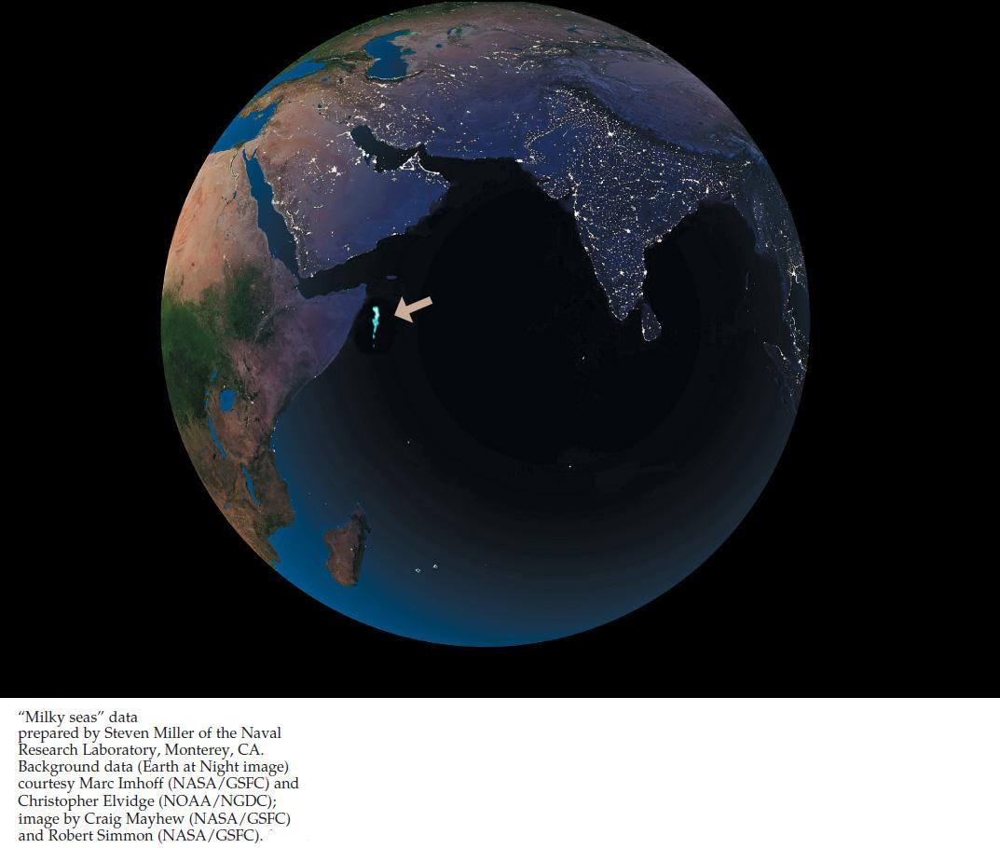

| 19 | Bacteria, Archaea, and Viruses |
|

A satellite image reveals thousands of square kilometers of “milky seas” (arrow) in the Indian Ocean. This expanse of bioluminescence is produced by Vibrio bacteria.
|
On the night of January 25, 1995, the British merchant vessel Lima was off the coast of Somalia, near the Horn of Africa. This area is infamous for bands of pirates, so the crew was keeping a watchful eye on the seas. On the horizon, they spotted an eerie whitish glow. It was directly in their path, and there was no way to avoid it. Was the glow the result of some strange trick of piracy?
Within 15 minutes of first spotting the glow, the Lima was surrounded by glowing waters for as far as her crew could see. As the ship’s log recorded, “it appeared as though the ship was sailing over a field of snow or gliding over the clouds.” Fortunately for the crew, the glow had nothing to do with pirates.
For centuries, mariners in this part of the world had reported occasional “milky seas” in which the sea surface produced a strange glow at night, extending fromhorizon to horizon. Scientists to that point had never been able to confirm the reality or the cause of such phenomena. It was well established, however, that many organisms can emit light by bioluminescence—a complex, enzyme-catalyzed biochemical reaction that results in the emission of light but not heat.
What kind of organism could cause the vast expanse of bioluminescence observed by the Lima? Some marine organisms emit flashes of light when they are disturbed, but they could not produce the sustained and uniform glow seen in milky seas. The only organisms known to produce the quality of bioluminescence consistent with milky seas are prokaryotes, such as bacteria of the genus Vibrio. Using information supplied by the Lima, biologists scanned satellite images of the Indian Ocean for the specific light wavelengths emitted by Vibrio. The satellite images clearly showed thousands of square kilometers of Vibrio-produced milky seas.
Vibrio’s bioluminescence requires a critical concentration of a specific chemical signal produced by the bacteria, so at low densities, free-living Vibrio populations do not glow. But as a colony establishes itself on phytoplankton, the bacteria’s population density increases and concentrations of the luminescence signal build up. Eventually bacterial density (and concentration of the signal) becomes high enough for the huge colony to produce visible light. Such chemical-inducing action among bacterial cells is referred to as quorum sensing.
What adaptive advantage does bioluminescence provide to Vibrio bacteria?